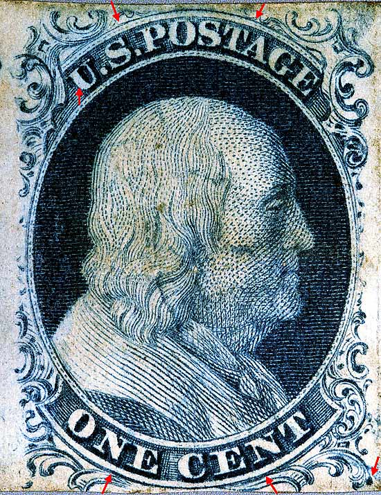
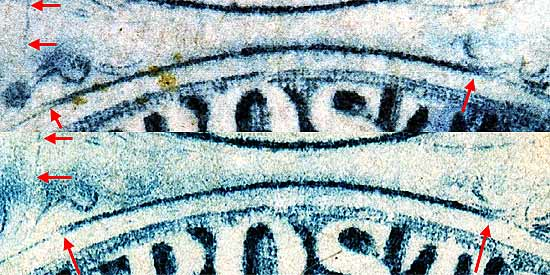
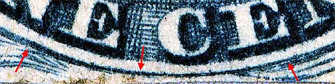
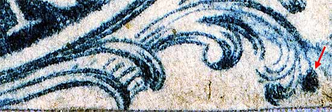
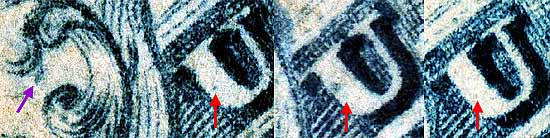

| 1¢ Franklin Issue of 1851-1857, PLATE 1 LATE.
Pos 68R1L, (Scott #9) |
| Scott #9 Blue, Type IV, Relief B Issued both imperforate and perforated. Perforated copys are more scarce. This is part of a horizontal strip of 3 consisting of 67R1L, 68R1L and 69R1L. SINGLE RECUT TOP, This stamp appears to be an early impression as the surface crack extending |
|  |
| Figure 1. (BELOW). Detail view of TOP RECUT LINE. The left end of the recut appears to be split and above original line but is not classified by Neinken or Ashbrook as a SPLIT TOP LINE variety. The fine surface crack can be seen to the far left.
 |
| Figure 2. (BELOW). Detail view of BOTTOM RECUT line.
 |
| Figure 3. (BELOW). Detail view of GUIDE DOT.
 |
| Figure 4. (BELOW). Detail view of plating mark in the U of US. A blur of color below Ornament "A" may only be present on very early impressions.
 |
| MY STANDARD DISCLAIMER: Thanks for visiting this site. I hope you learn something new as I am really having fun doing this. You, the visitor, have my permission to link to my pages and to share the link paths with others. I only ask in return that you send me an e-mail if I have made a mistake, or have done some other technical blunder that in my rush to put these pages up would cause the visitor confusion. Please also visit my other website at www.slingshotvenus.com. and support the live music arts. While your there, be sure to purchase our music. There are not many philatelic rock stars around and we need all the help we can get. :-) I can be reached at: nerdman@ix.netcom.com |